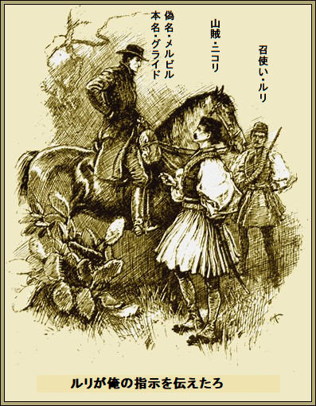
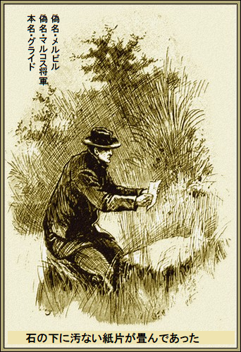
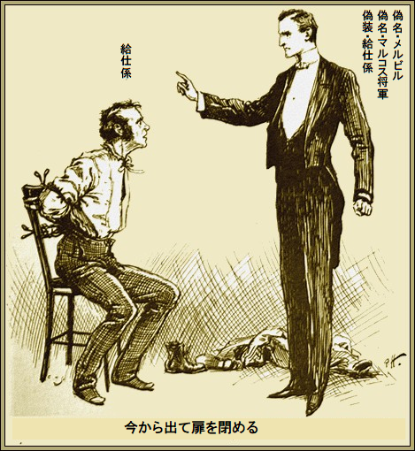
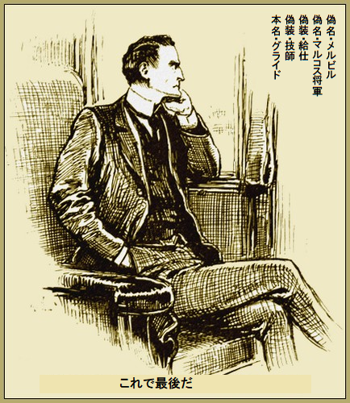

第一章
クレタ島の騒動が大きくなった。連日クロニクル新聞がいきり立ち、英国に行動を求めたが、世間は平常通り。分別のある人々が興奮しない理由は、高慢ちきなギリシャ人が名声と、クレタ島の両方を
だが解放の為に、今なお何千という人々が金も同情も得ようと
マルコス将軍の任務は二つ。一つは古代ギリシャ領土問題を明確にすること。もう一つは同時に大義の寄付金を集めること。だって明らかに、かの有名戦士の子孫たちは実際ひどい金欠だもの。
将軍は俳優の素質があり、戦いの素養もちょっぴり持ちあわせ、この遠征で数千ポンド集金したいと思っていた。
とても残念なことに、スター紙もクロニクル紙も将軍の写真を読者に提供できなかった。将軍が
その間、狡猾な頭脳をフル回転して、抜け穴を探す者がいた。
これぞ山師にとって格好の材料と、究極のお宝が口を開けており、グライドの意にぴったりだ。事件を期待して東部くんだりへ下向し、失望している風情なんてない。
クロニクル紙特派員が居たのは奥地、実際はマルコス将軍の邸宅、そこに写真の依頼が来た。
一団の中にアメリカ人従軍記者ホレース・メルビルという男がいた。ここで立場を明らかにした方がよかろう。メルビル記者とグライドは同一人物だ。クロニクル紙特派員は、この陽気なアメリカ人をなんて気まぐれなんだと思っていた。
クロニクル紙特派員が言った。
「まったく、写真はうかつだった。将軍のは必要だ。だがどうやってアテネへ運ぶ。一両日ここを離れられないし、そのあと将軍の出発時に海岸へ行く予定だし……」
メルビル記者が即答した。
「俺が行くよ。あの山脈を一人で行くのはちょっと危険だが、俺なら抜けられる。ギリシャには何度も来ているんだ」
野次馬
そのうえ海岸線では英国船が貝の密漁や海賊行為をしている。
「君はいい奴だ。申し出を受けよう。原稿も一袋渡してかまわんだろ。中に写真を入れるから」
グライドがその旨を約束した。聞くところ一週間後に将軍は俺の行く同じ道を海岸へくだる。
＊
グライドはあたかも背中を
召使いルリと、ご主人グライドが必死で馬の
「ルリ、ここが待ち合わせ場所か、合図しろ」
薄汚れた凶悪顔のギリシャ人ルリが指を唇にあてて、奇妙な口笛を三回吹いた。やがて返事があった。
高所から二人の男がぐんぐん降りてきて、たちまちグライドとルリの前に立ち止まり、山賊・ニコリがお辞儀するさまはグライドの偉さをよく知っている様子だ。ニコリは半島で一番大胆不敵な山賊だと、もっぱらの噂だ。

グライドが言った。
「ルリが俺の指示を伝えたろ。仕事は分かってるな」
ニコリがうなずいて、煙草をさっと取り出して答えた。
「ああ、この俺様が将軍より上だってことだ。命令があるまで奴をここで監禁しまさあ。それで駄賃は」
「英国金貨で五百ポンドだ。ここに金貨がある。あとで将軍がこの道を火曜日に通る。従者は一人だ」
「俺の手下は七人だぜ、ヘヘヘ。俺の記憶じゃ、旦那、アメリカ拳銃を一丁くださるんで」
「持って来たぞ。約束通りだろ。仕事はとても簡単、単純だ。あとはルリが教える。俺はぐずぐずしちゃおれん。夜明けまでにアテネへ着かなきゃならん」
＊
最終的にグライドがアテネへ着いたときは一人だった。ルリを厄介払いしたからだ。その上、別人に変装していた。ギリシャの略式軍服を着て、将軍そっくり。グライドはアテネに精通しているから、何も聞く必要はない。
充分に休養し、食事してから、繁華街へ出かけ、写真館に入った。言うまでもなく経営者は英国人だが、最先端じゃない。最新なら現地のギリシャ人に受けるだろうけど。でも、観光客がいつも大勢来る。経営者自らグライドを迎えて、用件を尋ねた。
「そうだな、俺の写真を撮ってくれ。豪華額縁で一枚だ。あしたの午後までに梱包してくれ。無理は承知の上だ。便宜には代金を上乗せする」
写真屋はちょっと文句を言ったが、最後には折れることをグライドはよく知っている。些細なことはいつも金がものを言う。
第一段階は大成功だ。グライドが店を後にして確信したのは、あしたの午後には写真が準備できているはず。
グライドが自分の写真を手に入れて大満足した。今までのところ全て順調だ。前途有望な山に手をつけて、金もうけの側面もあるが、今は現状をただ楽しむばかりで、冒険としての要素もあった。
居間のテーブルに写真を置いてにんまり。それから取り出したのが大きな封筒、クロニクル新聞社に渡す約束のブツだ。
お湯で封筒の
「うまく行きそうだ。将軍の正体なんて英国じゃ誰も知るまい。実際、新聞で名前を見たこともないだろう。ずっと自宅近辺にいるって夢にも思うまい。ニコリが奴を監禁している。監禁しないと金を半分失う。火曜日まで待ってそれから……」
＊
やがて火曜日になり、夕暮れごろグライドは街から出た。荒れ果てた道に来ると、伸び放題の草むらに、
石の下に汚ない紙片が畳んであった。開くと、鉛筆の走り書きがあり、いつになくじっくり読んだ。

「鳥は捕まえて、鳥かごに入れた、ニコリ」
グライドが満足げにほほ笑んだ。
「いよいよ、行動だ。いやあ、最後の冒険は数ある中で、最高にすばらしいものになりそうだ」
二十四時間後、グライドは英国に向け航海中。
第二章
マルコス将軍の肖像画が正式に発表され、今度はある意味
一片の
今なおロンドンの有名人は常に試練を受けるけど、たとえ自動的にうさん
さらにギリシャ人は今まで人気者を英国へ送ってこなかった。実際クレタ島問題は民衆の一大関心事になりつつあった。
何十万の人々が同情を寄せた。言語に絶するほどトルコ人を恐れている。
翌朝、マルコス将軍が到着し、メトロポールホテルの私室で大
著名な報道陣が出席した。連中が記事を書く。一斉に押しかけて一人の公爵に目をつけた。民主的観点からは良くないが、議長にかけては全幅の信頼が置ける。
クリフトン公爵は若輩ながら、とても長いこと熱心に議長職を勤めている。あと極左主義なんて些細なことだ。
テレフォン紙の編集長が述べた。
「大歓迎会をお約束します。強力な委員会が既に出来上がり、あちらの閣下が委員長です」
「閣下は親切でいらっしゃる」
とグライドがもったいぶって言った。
別な記者が割り込んだ。
「日曜日にハイドパークで大演説会を行います。ざっと五十万人は来るでしょう。将軍は英語が話せるから好都合です」
「私に演説しろと」
とグライドが尋ねた。
これはうかつだった。大衆を扇動するなんて苦痛だ。
「絶対欠かせませんよ。それこそ必要ですね。将軍なら大衆を意のままに熱狂させられるでしょう」
とクリフトン公爵。
グライドは奇妙な笑いを浮かべ、
「皆さんの
クリフトン公爵が約束をせかした。
「我々は暇じゃありません。すべての大都市で既に予定がはいっています。何千という町が御訪問を歓迎します。日曜日には英国の怒りが分かりますよ」
このヤマを踏んで初めて、グライドは自分の才能を演説分野に向けておけばよかったと後悔し始めた。まさに全責任を負わされたかのようだ。
何より嫌いな人間の側面を一つあげろと言われれば、熱狂だ。熱狂こそがあらゆるもめごとを引き起こす。とはいえ、もう引き返せない。
大演説会が正式に行われたが、五十万人にしては空きが目立つ。十席ばかりの演壇の周りはまばらだし、最後には悪態がでる始末だ。グライドは本心では喜んだ。
テレフォン紙の編集長を除き、誰も喜んでいないようだ。熱く大衆に語ったが、とても五十万人いるとは思えない。公明正大を望み、政府を不当に脅す事は望まない。五万人余りを見事に酔わせた。
やがてグライドがつぶやいた。
「とにかく大失敗だな。北部で失敗しなければいいが」
しかしながら、かの編集長は、楽天的とは言わないが、意に介さない。こう言った。
「アイアンブラ地区まで待ってください」
＊
アイアンブラ到着後、グライドは予想したよりいいと漏らした。
問題の街は急進派の一大中心だ。先導人物は富裕階級の男たち、この機会をとらえて六千人ばかり集合していた。
三時間後、グライドは四千ポンド以上を懐にホテルへ引き上げた。思わぬ大金を手にして、当然ながら近隣の小さな町コールビルでも、さらなる募金が期待される。
六千ポンド余が集まり、二週間で、俺は無駄に生きちゃいないと実感し始めた。
大勢の群衆がメアリーポート市庁舎に集まった。クリフトン公爵が議長席に座り、演壇は多くの灯りで照らされている。一か月が過ぎていた。最後の北部公演であり、
グライドは座って演説の番を待っていた。もう飽き飽きし、行事にへとへとだった。十万ポンド近く手にし、堅く決めていたのはロンドンに着いたら、うまく姿を消そう。頭の中では、南海へ行き、休養と
そのときハッと我に返った。誰かが後ろ
立ち上がると、わっと歓声が上がった。沸き立つ雲海の顔を見ればこそ、眼が冴え、感覚が研ぎ澄む。二十分間グライドは夢中になって
そのとき、騒動が扉の所で発生し、長いシーっという怒った声がした。グライドが黙った。あの声は聞いたことがあるような。誰かはいろうとして、扉係りが入らせないようにしている。やがて口論が収まったようで、二人が入場してきた。
グライドは顔色一つ変えなかったが、その瞬間、崖っぷちに立たされたことを悟った。ある程度こんな緊急事態に備えている。会場の外だったら、なあ。
でもそのときは何千という人々に囲まれていた。とっさに手を後ろに回し、ポケットの堅い銃に触り、安心した。扉の前に厳然と立つ二人の男はグライドの敵にほかならない。
クロニクル新聞のアテネ特派員と、本物のマルコス将軍だ。
もはや何が起こったか言う必要も無い。マルコスが逃げたか、ニコリが裏切ったかだ。そのあと特派員と会い、英字新聞を見て出した結論は、誰かが大胆不敵な悪事を仕掛けている。
奴らが誰を疑おうが知ったこっちゃない。実際問題、奴らは
一方のグライドは数分の猶予があれば、奴らに高笑いできる。必要な瞬間に何にでも変装するよう用意していた。町から町へ移動する際、用心を怠らなかった。
グライドは冷静に落ち着いて話した。一時たりとも鉄壁の神経が緩むことはない。必死に知恵を絞り脱出方法を探った。やおら無謀にも、自らの悪運と豊富な
もはや、敵が壇上の端まで詰め寄ってきた。今にも地雷が爆発しそうだ。
侵入した飛び入りがおもむろに言った。
「中断して申し訳ない。重大なことがあります。いま座った男はペテン師、詐欺師であります。私の横の紳士が本物のマルコス将軍であります」
怒号一つなかった。余りにも
「この飛び入り弁士を知ってる者は？」
と誰かがやっと尋ねた。
「私が知っています。実際に多くのものが知っています。これは信頼できる人からの重大な告発ですぞ。さあ、あなたの言い分は？」
と議長。
議長のクリフトン公爵がいぶかしげにグライドに向き直った。
グライドは穏やかに笑って答えた。
「何もありません。ひどい狂言ですね、予想してませんでした。判断はあなた方次第です。席をはずしてよろしいですか」
いかつい男が壇上で道をふさぎ、警告した。
「こら、止まれ。ここで決着をつけろ」
グライドは席へ戻り、上品にほほ笑んだ。聴衆はあっけにとられていた。
「その方がいいでしょう、お二人が壇上に上がって、正式に告発されたら」
と議長が勧めた。
そのように進んだ。飛び入りが最初に口火を切った。
「今言いますが、私は証明できるのであります。この詐欺師の正体は知らないし、どうでもいい。さしあたり疑わしいのはメルビルという男で、アメリカ特派員に変装してつけ込んだのであります。あとは頭脳作戦です。土地勘があり、悪名高いニコリという山賊に金をやって、将軍を誘拐したのであります。そのあと私の原稿と将軍の写真をアテネへ運びました。写真をここにいるこいつが巧妙に差し替えました。何たる天才的な計画か、英国の誰も本物の将軍を知らないし、新聞を見る限り、まさかどんな悪魔が乗っ取ったなんて夢にも思わないでしょう。幸いにも更なる悪事を防ぐのに間に合いました」
グライドが顔を上げて聴衆の反応を見る必要はなかった。どうやら聴衆は言い分を全部信じたようだ。怒りのざわめきが大きな怒号になった。
「静粛に。相手側の言い分も聞かねば。さあどうぞ」
と議長が叫び、グライドに向き直ったが、グライドは両肩をすくめるばかり。
「何か言うことはありませんか」
と議長。
「ありません。事実です」
とグライドは笑顔だ。
「それでは詐欺師だと認めるんですね。何も反論しないなら……」
グライドが立ち上がり、手を後ろに回した。戦う眼光だ。何千人対一人。百万に一つのチャンスか。
「やるなら、こうだ」
最後っ屁を発して、壇上から床へ飛び下りた。そのとき、ガス灯で銃身がギラリ光った。
「下がれ、俺に触ったら殺す」
群衆はおののき、羊のように片側に固まった。グライドの鋭い眼光で凍りついた。
度胸のある男が片手を出した途端、頭をぶち抜かれた。ご婦人方が悲鳴を上げ、失神。グライドは扉を押し通った。
どうやら
その時、勇敢な警官に捕まった。これじゃたちまち皆に抑えつけられる。鞭のようなパンという音がして、閃光がぴかっと光り、警官の右手がだらり。グライドは勝利の雄たけびを上げ、通りへ一目散。
だが危険がすべて去ったわけじゃない。聴衆の中で、若者や屈強な連中が会場を飛び出し、グライドを追ってきた。全力疾走は得意じゃない。しまった、追い詰められる。
再三、行ったり来たり、曲がったりした。道行く人々が立ち止まり怪しんだ。いつ捕まってもおかしくない。ふと気づけば、自分のホテルの前じゃないか。
果たして暗闇に隠れ、敵が去るまで隠れ通せるか。そうするしかない。一分後、玄関へ飛び込み、自室の階上へ駆けあがった。そこで顔を洗い、変装を解いた。そのあと最上階へ忍び込み、聞き耳を立てた。
下は静か、つかの間の静寂の後、例の声が。皆の言ってることがはっきり聞こえる。ひと言も聞きもらすまい。
「警察が来るまで待とう。奴は間違いなく我々を巻いたと思って、当分自室にいる。武器を持ってるから慎重にしなければ」
時間がゆっくり流れた。ここで変装できたらなあ。だが街のはずれに隠してある。近くで給仕係のベルが鳴り、同じ階の部屋にお盆で何か持って来た。扉に隠れ、給仕の帰りを待ち伏せた。そして踏み出し、意を決した。
「忙しいか」
「いいえ。今終わったところでございます。何か……」
給仕はもう何も言えない。グライドが
グライドがニヤリ笑って、強力な握力を
「騒ぐなよ」
とすごんだ。
気が動転した給仕がかすれ声で、
「私には妻と、二人の子供が……」
グライドが男をねめつけた。ぐずぐずしちゃおれん。
「いいか、シーッ、ちょっとでも音を立てたら、容赦なくお前の脳みそを高級
給仕が正気に戻って、もごもご、
「ほかに選択肢はないようでございます」
「その通りだ。四の五の言わず、すぐ服を脱げ。さあ、俺より早くしろ」
グライドが上着を脱ぎ始めた。あっという間に、給仕に変身した。そして男に襲いかかり、ズボンつりで椅子にうまく縛りつけた。
「金は靴の中に入れておく。今から出て扉を閉める。あそこの時計を見ろ。五分過ぎたら助けを呼べ。そしたらありのままをしゃべっていい。ただし、靴の中の英国銀行紙幣は言うな。言わないと思うけどな。わかったか」

給仕係が苦笑い。この調子ならもうやられないだろう。生れてこのかたの大金が稼げそうだ。
ぼそっとささやいた。
「わかりました、旦那さま。おっしゃるように致します。うまく切り抜けてくださいまし」
グライドが笑いながら、時計を指差し、
「外へ出たら、残り時間を数える。五分だぞ、いいか。さもないと、喪服を着る羽目になるぞ」
鏡の前にすっと立ち、白タイを整えてから、静かに部屋を出て行った。
下の玄関には興奮した群衆が集まっている。中に青服警官もいる。グライドはゆっくりと遠回りした。経営者が興奮し、震え声で言っている。
「皆さんお願いですから、暴力はやめてください。破産だ」
「用心しますよ。ひどい奴だから」
とクリフトン公爵が応じた。
グライドはそれ以上聞かなかった。話に全く興味はない。持ち前の図太さで、血祭りを求める群衆を押し分け、外套掛けへ進んだ。そこで外套と帽子を選んで身につけて、ホテルを出た。
数百人、集まっていた。噂が野火のように広がったからだ。まだ人ごみの中だと分かり、グライドがブツブツ。五分経っても町はずれに届いてない。
そのとき大声が響いた。あたかも魔法のように群衆の端端まで届いた。
「詐欺師が逃げたぞ、やり口は……」
そんな電信技術はないのに、たちまち大群衆に伝わった。
グライドはさっと抜けて、辻馬車を呼び止めた。頭から飛び乗って、大声で、
「クレイブン・ロード端まで一〇分で行ってくれ。一ポンド金貨をやる」
御者が馬に
御者に金を渡し、急いで暗闇にまぎれた。やり抜いた興奮で胸が高なった。自由だ。
変装道具の隠し場所へ行って、深夜前に変装を終え、衣服を深い池の底に沈めた。夜明けごろ、堅気の技師がノッティンガム駅から出てきて、街の反対側へ向かった。
午後遅く、グライド本人そのものがロンドンへ向け一等車で旅立った。自分に言い聞かせた。
「これで最後だ。誰より稼いだ。いつかへまをしでかす。持ち衣装を全部捨てて、典型的な田舎紳士になろう」

ノース地方のとある大邸宅に住んでいるのがフィリックス・グライド、英国系アメリカ人、合衆国で莫大な財産を築いたとのうわさだ。
評判の気さくな人物で、人気をコーラという妻と分け合っていた。コーラなるグライド夫人は社交界の花形となり、若い男どもの魅惑を大いに引きつけた。
大抵のご婦人がた同様、夫に秘密などないとおぼしめしているけど、大間違い。グライドは絶対に
その男がよく独り言を言っていた。
「俺が応分の罪を受けるとしたら、きっと終身懲役刑だな。
完